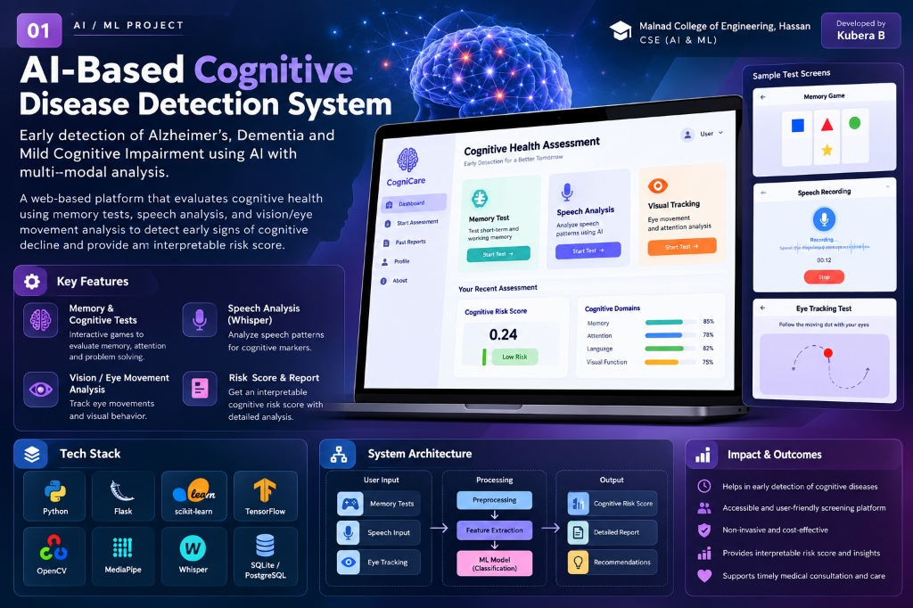

PROJECT 01
AI-Based Cognitive Disease Detection System
AI / ML HEALTHCARE · MULTI-MODAL ANALYSISEarly detection of Alzheimer's, Dementia and Mild Cognitive Impairment using AI with multi-modal analysis. Evaluates cognitive health using memory tests, speech analysis (Whisper), and visual/eye tracking analysis to detect early signs of decline and provide an interpretable risk score.
KEY FEATURES
- Interactive memory & cognitive assessment games
- Speech analysis using Whisper for cognitive markers
- Eye movement & visual tracking with MediaPipe
- Interpretable risk scoring & detailed report
TECH STACK
Python · Flask · scikit-learn · TensorFlow · OpenCV · MediaPipe · Whisper · SQLite/PostgreSQL
Impact: Accessible, non-invasive, cost-effective screening platform supporting timely medical consultation.
